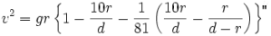
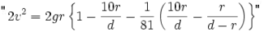
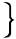

"Now then," replied Barbican, "the expression having numerical values, I am trying to find v, that is to say, the initial velocity which the Projectile must possess in order to reach the point where the two attractions neutralize each other. Here the velocity being null, v prime becomes zero, and x the required distance of this neutral point must be represented by the nine-tenths of d, the distance between the two centres."
"I have a vague kind of idea that it must be so," said Ardan.
"I shall, therefore, have the following result;" continued Barbican, figuring up; "x being nine-tenths of d, and v prime being zero, my formula becomes:—

The Captain read it off rapidly.
"Right! that's correct!" he cried.
"You think so?" asked Barbican.
"As true as Euclid!" exclaimed M'Nicholl.
"Wonderful fellows," murmured the Frenchman, smiling with admiration.
"You understand now, Ardan, don't you?" asked Barbican.
"Don't I though?" exclaimed Ardan, "why my head is splitting with it!"
"Therefore," continued Barbican,

"And now," exclaimed M'Nicholl, sharpening his pencil; "in order to obtain the velocity of the Projectile when leaving the atmosphere, we have only to make a slight calculation."
The Captain, who before clerking on a Mississippi steamboat had been professor of Mathematics in an Indiana university, felt quite at home at the work. He rained figures from his pencil with a velocity that would have made Marston stare. Page after page was filled with his multiplications and divisions, while Barbican looked quietly on, and Ardan impatiently stroked his head and ears to keep down a rising head-ache.
"Well?" at last asked Barbican, seeing the Captain stop and throw a somewhat hasty glance over his work.
"Well," answered M'Nicholl slowly but confidently, "the calculation is made, I think correctly; and v, that is, the velocity of the Projectile when quitting the atmosphere, sufficient to carry it to the neutral point, should be at least ..."
"How much?" asked Barbican, eagerly.
"Should be at least 11,972 yards the first second."
"What!" cried Barbican, jumping off his seat. "How much did you say?"
"11,972 yards the first second it quits the atmosphere."
"Oh, malediction!" cried Barbican, with a gesture of terrible despair.
"What's the matter?" asked Ardan, very much surprised.
"Enough is the matter!" answered Barbican excitedly. "This velocity having been diminished by a third, our initial velocity should have been at least ..."
"17,958 yards the first second!" cried M'Nicholl, rapidly flourishing his pencil.
"But the Cambridge Observatory having declared that 12,000 yards the first second were sufficient, our Projectile started with no greater velocity!"
"Well?" asked M'Nicholl.
"Well, such a velocity will never do!"
| "How??" "How!!" |
 | cried the Captain and Ardan in one voice. |
"We can never reach the neutral point!"
"Thunder and lightning"
"Fire and Fury!"
"We can't get even halfway!"
"Heaven and Earth!"
"Mille noms d'un boulet!" cried Ardan, wildly gesticulating.
"And we shall fall back to the Earth!"
"Oh!"
"Ah!"
They could say no more. This fearful revelation took them like a stroke of apoplexy.
How could they imagine that the Observatory men had committed such a blunder? Barbican would not believe it possible. He made the Captain go over his calculation again and again; but no flaw was to be found in it. He himself carefully examined it, figure after figure, but he could find nothing wrong. They both took up the formula and subjected it to the strongest tests; but it was invulnerable. There was no denying the fact. The Cambridge professors had undoubtedly blundered in saying that an initial velocity of 12,000 yards a second would be enough to carry them to the neutral point. A velocity of nearly 18,000 yards would be the very lowest required for such a purpose. They had simply forgotten to allow a third for friction.
The three friends kept profound silence for some time. Breakfast now was the last thing thought of. Barbican, with teeth grating, fingers clutching, and eye-brows closely contracting, gazed grimly through the window. The Captain, as a last resource, once more examined his calculations, earnestly hoping to find a figure wrong. Ardan could neither sit, stand nor lie still for a second, though he tried all three. His silence, of course, did not last long.
"Ha! ha! ha!" he laughed bitterly. "Precious scientific men! Villainous old hombogues! The whole set not worth a straw! I hope to gracious, since we must fall, that we shall drop down plumb on Cambridge Observatory, and not leave a single one of the miserable old women, called professors, alive in the premises!"
A certain expression in Ardan's angry exclamation had struck the Captain like a shot, and set his temples throbbing violently.
"Must fall!" he exclaimed, starting up suddenly. "Let us see about that! It is now seven o'clock in the morning. We must have, therefore, been at least thirty-two hours on the road, and more than half of our passage is already made. If we are going to fall at all, we must be falling now! I'm certain we're not, but, Barbican, you have to find it out!"
Barbican caught the idea like lightning, and, seizing a compass, he began through the floor window to measure the visual angle of the distant Earth. The apparent immobility of the Projectile allowed him to do this with great exactness. Then laying aside the instrument, and wiping off the thick drops of sweat that bedewed his forehead, he began jotting down some figures on a piece of paper. The Captain looked on with keen interest; he knew very well that Barbican was calculating their distance from the Earth by the apparent measure of the terrestrial diameter, and he eyed him anxiously.
Pretty soon his friends saw a color stealing into Barbican's pale face, and a triumphant light glittering in his eye.
"No, my brave boys!" he exclaimed at last throwing down his pencil, "we're not falling! Far from it, we are at present more than 150 thousand miles from the Earth!"
| "Hurrah!" "Bravo!" |
cried M'Nicholl and Ardan, in a breath. |
"We have passed the point where we should have stopped if we had had no more initial velocity than the Cambridge men allowed us!"
"Hurrah! hurrah!"
"Bravo, Bravissimo!"
"And we're still going up!"
"Glory, glory, hallelujah!" sang M'Nicholl, in the highest excitement.
"Vive ce cher Barbican!" cried Ardan, bursting into French as usual whenever his feelings had the better of him.
"Of course we're marching on!" continued M'Nicholl, "and I know the reason why, too. Those 400,000 pounds of gun-cotton gave us greater initial velocity than we had expected!"
"You're right, Captain!" added Barbican; "besides, you must not forget that, by getting rid of the water, the Projectile was relieved of considerable weight!"
"Correct again!" cried the Captain. "I had not thought of that!"
"Therefore, my brave boys," continued Barbican, with some excitement; "away with melancholy! We're all right!"
"Yes; everything is lovely and the goose hangs high!" cried the Captain, who on grand occasions was not above a little slang.
"Talking of goose reminds me of breakfast," cried Ardan; "I assure you, my fright has not taken away my appetite!"
"Yes," continued Barbican. "Captain, you're quite right. Our initial velocity very fortunately was much greater than what our Cambridge friends had calculated for us!"
"Hang our Cambridge friends and their calculations!" cried Ardan, with some asperity; "as usual with your scientific men they've more brass than brains! If we're not now bed-fellows with the oysters in the Gulf of Mexico, no thanks to our kind Cambridge friends. But talking of oysters, let me remind you again that breakfast is ready."
The meal was a most joyous one. They ate much, they talked more, but they laughed most. The little incident of Algebra had certainly very much enlivened the situation.
"Now, my boys," Ardan went on, "all things thus turning out quite comfortable, I would just ask you why we should not succeed? We are fairly started. No breakers ahead that I can see. No rock on our road. It is freer than the ships on the raging ocean, aye, freer than the balloons in the blustering air. But the ship arrives at her destination; the balloon, borne on the wings of the wind, rises to as high an altitude as can be endured; why then should not our Projectile reach the Moon?"
"It will reach the Moon!" nodded Barbican.
"We shall reach the Moon or know for what!" cried M'Nicholl, enthusiastically.
"The great American nation must not be disappointed!" continued Ardan. "They are the only people on Earth capable of originating such an enterprise! They are the only people capable of producing a Barbican!"
"Hurrah!" cried M'Nicholl.
"That point settled," continued the Frenchman, "another question comes up to which I have not yet called your attention. When we get to the Moon, what shall we do there? How are we going to amuse ourselves? I'm afraid our life there will be awfully slow!"
His companions emphatically disclaimed the possibility of such a thing.
"You may deny it, but I know better, and knowing better, I have laid in my stores accordingly. You have but to choose. I possess a varied assortment. Chess, draughts, cards, dominoes—everything in fact, but a billiard table?"
"What!" exclaimed Barbican; "cumbered yourself with such gimcracks?"
"Such gimcracks are not only good to amuse ourselves with, but are eminently calculated also to win us the friendship of the Selenites."
"Friend Michael," said Barbican, "if the Moon is inhabited at all, her inhabitants must have appeared several thousand years before the advent of Man on our Earth, for there seems to be very little doubt that Luna is considerably older than Terra in her present state. Therefore, Selenites, if their brain is organized like our own, must have by this time invented all that we are possessed of, and even much which we are still to invent in the course of ages. The probability is that, instead of their learning from us, we shall have much to learn from them."
"What!" asked Ardan, "you think they have artists like Phidias, Michael Angelo and Raphael?"
"Certainly."
"And poets like Homer, Virgil, Dante, Shakspeare, Göthe and Hugo?"
"Not a doubt of it."
"And philosophers like Plato, Aristotle, Descartes, Bacon, Kant?"
"Why not?"
"And scientists like Euclid, Archimedes, Copernicus, Newton, Pascal?"
"I should think so."
"And famous actors, and singers, and composers, and—and photographers?"
"I could almost swear to it."
"Then, dear boy, since they have gone ahead as far as we and even farther, why have not those great Selenites tried to start a communication with the Earth? Why have they not fired a projectile from the regions lunar to the regions terrestrial?"
"Who says they have not done so?" asked Barbican, coolly.
"Attempting such a communication," observed the Captain, "would certainly be much easier for them than for us, principally for two reasons. First, attraction on the Moon's surface being six times less than on the Earth's, a projectile could be sent off more rapidly; second, because, as this projectile need be sent only 24 instead of 240 thousand miles, they could do it with a quantity of powder ten times less than what we should require for the same purpose."
"Then I ask again," said the Frenchman; "why haven't they made such an attempt?"
"And I reply again," answered Barbican. "How do you know that they have not made such an attempt?"
"Made it? When?"
"Thousands of years ago, before the invention of writing, before even the appearance of Man on the Earth."
"But the bullet?" asked Ardan, triumphantly; "Where's the bullet? Produce the bullet!"
"Friend Michael," answered Barbican, with a quiet smile, "you appear to forget that the 5/6 of the surface of our Earth is water. 5 to 1, therefore, that the bullet is more likely to be lying this moment at the bottom of the Atlantic or the Pacific than anywhere else on the surface of our globe. Besides, it may have sunk into some weak point of the surface, at the early epoch when the crust of the Earth had not acquired sufficient solidity."
"Captain," said Ardan, turning with a smile to M'Nicholl; "no use in trying to catch Barby; slippery as an eel, he has an answer for everything. Still I have a theory on the subject myself, which I think it no harm to ventilate. It is this: The Selenites have never sent us any projectile at all, simply because they had no gunpowder: being older and wiser than we, they were never such fools as to invent any.—But, what's that? Diana howling for her breakfast! Good! Like genuine scientific men, while squabbling over nonsense, we let the poor animals die of hunger. Excuse us, Diana; it is not the first time the little suffer from the senseless disputes of the great."
So saying he laid before the animal a very toothsome pie, and contemplated with evident pleasure her very successful efforts towards its hasty and complete disappearance.
"Looking at Diana," he went on, "makes me almost wish we had made a Noah's Ark of our Projectile by introducing into it a pair of all the domestic animals!"
"Not room enough," observed Barbican.
"No doubt," remarked the Captain, "the ox, the cow, the horse, the goat, all the ruminating animals would be very useful in the Lunar continent. But we couldn't turn our Projectile into a stable, you know."
"Still, we might have made room for a pair of poor little donkeys!" observed Ardan; "how I love the poor beasts. Fellow feeling, you will say. No doubt, but there really is no animal I pity more. They are the most ill-treated brutes in all creation. They are not only banged during life; they are banged worse after death!"
"Hey! How do you make that out?" asked his companions, surprised.
"Because we make their skins into drum heads!" replied Ardan, with an air, as if answering a conundrum.
Barbican and M'Nicholl could hardly help laughing at the absurd reply of their lively companion, but their hilarity was soon stopped by the expression his face assumed as he bent over Satellite's body, where it lay stretched on the sofa.
"What's the matter now?" asked Barbican.
"Satellite's attack is over," replied Ardan.
"Good!" said M'Nicholl, misunderstanding him.
"Yes, I suppose it is good for the poor fellow," observed Ardan, in melancholy accents. "Life with one's skull broken is hardly an enviable possession. Our grand acclimatization project is knocked sky high, in more senses than one!"
There was no doubt of the poor dog's death. The expression of Ardan's countenance, as he looked at his friends, was of a very rueful order.
"Well," said the practical Barbican, "there's no help for that now; the next thing to be done is to get rid of the body. We can't keep it here with us forty-eight hours longer."
"Of course not," replied the Captain, "nor need we; our lights, being provided with hinges, can be lifted back. What is to prevent us from opening one of them, and flinging the body out through it!"
The President of the Gun Club reflected a few minutes; then he spoke:
"Yes, it can be done; but we must take the most careful precautions."
"Why so?" asked Ardan.
"For two simple reasons;" replied Barbican; "the first refers to the air enclosed in the Projectile, and of which we must be very careful to lose only the least possible quantity."
"But as we manufacture air ourselves!" objected Ardan.
"We manufacture air only partly, friend Michael," replied Barbican. "We manufacture only oxygen; we can't supply nitrogen—By the bye, Ardan, won't you watch the apparatus carefully every now and then to see that the oxygen is not generated too freely. Very serious consequences would attend an immoderate supply of oxygen—No, we can't manufacture nitrogen, which is so absolutely necessary for our air and which might escape readily through the open windows."
"What! the few seconds we should require for flinging out poor Satellite?"
"A very few seconds indeed they should be," said Barbican, very gravely.
"Your second reason?" asked Ardan.
"The second reason is, that we must not allow the external cold, which must be exceedingly great, to penetrate into our Projectile and freeze us alive."
"But the Sun, you know—"
"Yes, the Sun heats our Projectile, but it does not heat the vacuum through which we are now floating. Where there is no air there can neither be heat nor light; just as wherever the rays of the Sun do not arrive directly, it must be both cold and dark. The temperature around us, if there be anything that can be called temperature, is produced solely by stellar radiation. I need not say how low that is in the scale, or that it would be the temperature to which our Earth should fall, if the Sun were suddenly extinguished."
"Little fear of that for a few more million years," said M'Nicholl.
"Who can tell?" asked Ardan. "Besides, even admitting that the Sun will not soon be extinguished, what is to prevent the Earth from shooting away from him?"
"Let friend Michael speak," said Barbican, with a smile, to the Captain; "we may learn something."
"Certainly you may," continued the Frenchman, "if you have room for anything new. Were we not struck by a comet's tail in 1861?"
"So it was said, anyhow," observed the Captain. "I well remember what nonsense there was in the papers about the 'phosphorescent auroral glare.'"
"Well," continued the Frenchman, "suppose the comet of 1861 influenced the Earth by an attraction superior to the Sun's. What would be the consequence? Would not the Earth follow the attracting body, become its satellite, and thus at last be dragged off to such a distance that the Sun's rays could no longer excite heat on her surface?"
"Well, that might possibly occur," said Barbican slowly, "but even then I question if the consequences would be so terrible as you seem to apprehend."
"Why not?"
"Because the cold and the heat might still manage to be nearly equalized on our globe. It has been calculated that, had the Earth been carried off by the comet of '61, when arrived at her greatest distance, she would have experienced a temperature hardly sixteen times greater than the heat we receive from the Moon, which, as everybody knows, produces no appreciable effect, even when concentrated to a focus by the most powerful lenses."
"Well then," exclaimed Ardan, "at such a temperature—"
"Wait a moment," replied Barbican. "Have you never heard of the principle of compensation? Listen to another calculation. Had the Earth been dragged along with the comet, it has been calculated that at her perihelion, or nearest point to the Sun, she would have to endure a heat 28,000 times greater than our mean summer temperature. But this heat, fully capable of turning the rocks into glass and the oceans into vapor, before proceeding to such extremity, must have first formed a thick interposing ring of clouds, and thus considerably modified the excessive temperature. Therefore, between the extreme cold of the aphelion and the excessive heat of the perihelion, by the great law of compensation, it is probable that the mean temperature would be tolerably endurable."
"At how many degrees is the temperature of the interplanetary space estimated?" asked M'Nicholl.
"Some time ago," replied Barbican, "this temperature was considered to be very low indeed—millions and millions of degrees below zero. But Fourrier of Auxerre, a distinguished member of the Académie des Sciences, whose Mémoires on the temperature of the Planetary spaces appeared about 1827, reduced these figures to considerably diminished proportions. According to his careful estimation, the temperature of space is not much lower than 70 or 80 degrees Fahr. below zero."
"No more?" asked Ardan.
"No more," answered Barbican, "though I must acknowledge we have only his word for it, as the Mémoire in which he had recorded all the elements of that important determination, has been lost somewhere, and is no longer to be found."
"I don't attach the slightest importance to his, or to any man's words, unless they are sustained by reliable evidence," exclaimed M'Nicholl. "Besides, if I'm not very much mistaken, Pouillet—another countryman of yours, Ardan, and an Academician as well as Fourrier—esteems the temperature of interplanetary spaces to be at least 256° Fahr. below zero. This we can easily verify for ourselves this moment by actual experiment."
"Not just now exactly," observed Barbican, "for the solar rays, striking our Projectile directly, would give us a very elevated instead of a very low temperature. But once arrived at the Moon, during those nights fifteen days long, which each of her faces experiences alternately, we shall have plenty of time to make an experiment with every condition in our favor. To be sure, our Satellite is at present moving in a vacuum."
"A vacuum?" asked Ardan; "a perfect vacuum?"
"Well, a perfect vacuum as far as air is concerned."
"But is the air replaced by nothing?"
"Oh yes," replied Barbican. "By ether."
"Ah, ether! and what, pray, is ether?"
"Ether, friend Michael, is an elastic gas consisting of imponderable atoms, which, as we are told by works on molecular physics, are, in proportion to their size, as far apart as the celestial bodies are from each other in space. This distance is less than the 1/3000000 x 1/1000', or the one trillionth of a foot. The vibrations of the molecules of this ether produce the sensations of light and heat, by making 430 trillions of undulations per second, each undulation being hardly more than the one ten-millionth of an inch in width."
"Trillions per second! ten-millionths of an inch in width!" cried Ardan. "These oscillations have been very neatly counted and ticketed, and checked off! Ah, friend Barbican," continued the Frenchman, shaking his head, "these numbers are just tremendous guesses, frightening the ear but revealing nothing to the intelligence."
"To get ideas, however, we must calculate—"
"No, no!" interrupted Ardan: "not calculate, but compare. A trillion tells you nothing—Comparison, everything. For instance, you say, the volume of Uranus is 76 times greater than the Earth's; Saturn's 900 times greater; Jupiter's 1300 times greater; the Sun's 1300 thousand times greater—You may tell me all that till I'm tired hearing it, and I shall still be almost as ignorant as ever. For my part I prefer to be told one of those simple comparisons that I find in the old almanacs: The Sun is a globe two feet in diameter; Jupiter, a good sized orange; Saturn, a smaller orange; Neptune, a plum; Uranus, a good sized cherry; the Earth, a pea; Venus, also a pea but somewhat smaller; Mars, a large pin's head; Mercury, a mustard seed; Juno, Ceres, Vesta, Pallas, and the other asteroids so many grains of sand. Be told something like that, and you have got at least the tail of an idea!"
This learned burst of Ardan's had the natural effect of making his hearers forget what they had been arguing about, and they therefore proceeded at once to dispose of Satellite's body. It was a simple matter enough—no more than to fling it out of the Projectile into space, just as the sailors get rid of a dead body by throwing it into the sea. Only in this operation they had to act, as Barbican recommended, with the utmost care and dispatch, so as to lose as little as possible of the internal air, which, by its great elasticity, would violently strive to escape. The bolts of the floor-light, which was more than a foot in diameter, were carefully unscrewed, while Ardan, a good deal affected, prepared to launch his dog's body into space. The glass, worked by a powerful lever which enabled it to overcome the pressure of the enclosed air, turned quickly on its hinges, and poor Satellite was dropped out. The whole operation was so well managed that very little air escaped, and ever afterwards Barbican employed the same means to rid the Projectile of all the litter and other useless matter by which it was occasionally encumbered.
The evening of this third of December wore away without further incident. As soon as Barbican had announced that the Projectile was still winging its way, though with retarded velocity, towards the lunar disc, the travellers quietly retired to rest.
On the fourth of December, the Projectile chronometers marked five o'clock in the morning, just as the travellers woke up from a pleasant slumber. They had now been 54 hours on their journey. As to lapse of time, they had passed not much more than half of the number of hours during which their trip was to last; but, as to lapse of space, they had already accomplished very nearly the seven-tenths of their passage. This difference between time and distance was due to the regular retardation of their velocity.
They looked at the earth through the floor-light, but it was little more than visible—a black spot drowned in the solar rays. No longer any sign of a crescent, no longer any sign of ashy light. Next day, towards midnight, the Earth was to be new, at the precise moment when the Moon was to be full. Overhead, they could see the Queen of Night coming nearer and nearer to the line followed by the Projectile, and evidently approaching the point where both should meet at the appointed moment. All around, the black vault of heaven was dotted with luminous points which seemed to move somewhat, though, of course, in their extreme distance their relative size underwent no change. The Sun and the stars looked exactly as they had appeared when observed from the Earth. The Moon indeed had become considerably enlarged in size, but the travellers' telescopes were still too weak to enable them to make any important observation regarding the nature of her surface, or that might determine her topographical or geological features.
Naturally, therefore, the time slipped away in endless conversation. The Moon, of course, was the chief topic. Each one contributed his share of peculiar information, or peculiar ignorance, as the case might be. Barbican and M'Nicholl always treated the subject gravely, as became learned scientists, but Ardan preferred to look on things with the eye of fancy. The Projectile, its situation, its direction, the incidents possible to occur, the precautions necessary to take in order to break the fall on the Moon's surface—these and many other subjects furnished endless food for constant debate and inexhaustible conjectures.
For instance, at breakfast that morning, a question of Ardan's regarding the Projectile drew from Barbican an answer curious enough to be reported.
"Suppose, on the night that we were shot up from Stony Hill," said Ardan, "suppose the Projectile had encountered some obstacle powerful enough to stop it—what would be the consequence of the sudden halt?"
"But," replied Barbican, "I don't understand what obstacle it could have met powerful enough to stop it."
"Suppose some obstacle, for the sake of argument," said Ardan.
"Suppose what can't be supposed," replied the matter-of-fact Barbican, "what cannot possibly be supposed, unless indeed the original impulse proved too weak. In that case, the velocity would have decreased by degrees, but the Projectile itself would not have suddenly stopped."
"Suppose it had struck against some body in space."
"What body, for instance?"
"Well, that enormous bolide which we met."
"Oh!" hastily observed the Captain, "the Projectile would have been dashed into a thousand pieces and we along with it."
"Better than that," observed Barbican; "we should have been burned alive."
"Burned alive!" laughed Ardan. "What a pity we missed so interesting an experiment! How I should have liked to find out how it felt!"
"You would not have much time to record your observations, friend Michael, I assure you," observed Barbican. "The case is plain enough. Heat and motion are convertible terms. What do we mean by heating water? Simply giving increased, in fact, violent motion to its molecules."
"Well!" exclaimed the Frenchman, "that's an ingenious theory any how!"
"Not only ingenious but correct, my dear friend, for it completely explains all the phenomena of caloric. Heat is nothing but molecular movement, the violent oscillation of the particles of a body. When you apply the brakes to the train, the train stops. But what has become of its motion? It turns into heat and makes the brakes hot. Why do people grease the axles? To hinder them from getting too hot, which they assuredly would become if friction was allowed to obstruct the motion. You understand, don't you?"
"Don't I though?" replied Ardan, apparently in earnest. "Let me show you how thoroughly. When I have been running hard and long, I feel myself perspiring like a bull and hot as a furnace. Why am I then forced to stop? Simply because my motion has been transformed into heat! Of course, I understand all about it!"
Barbican smiled a moment at this comical illustration of his theory and then went on:
"Accordingly, in case of a collision it would have been all over instantly with our Projectile. You have seen what becomes of the bullet that strikes the iron target. It is flattened out of all shape; sometimes it is even melted into a thin film. Its motion has been turned into heat. Therefore, I maintain that if our Projectile had struck that bolide, its velocity, suddenly checked, would have given rise to a heat capable of completely volatilizing it in less than a second."
"Not a doubt of it!" said the Captain. "President," he added after a moment, "haven't they calculated what would be the result, if the Earth were suddenly brought to a stand-still in her journey, through her orbit?"
"It has been calculated," answered Barbican, "that in such a case so much heat would be developed as would instantly reduce her to vapor."
"Hm!" exclaimed Ardan; "a remarkably simple way for putting an end to the world!"
"And supposing the Earth to fall into the Sun?" asked the Captain.
"Such a fall," answered Barbican, "according to the calculations of Tyndall and Thomson, would develop an amount of heat equal to that produced by sixteen hundred globes of burning coal, each globe equal in size to the earth itself. Furthermore such a fall would supply the Sun with at least as much heat as he expends in a hundred years!"
"A hundred years! Good! Nothing like accuracy!" cried Ardan. "Such infallible calculators as Messrs. Tyndall and Thomson I can easily excuse for any airs they may give themselves. They must be of an order much higher than that of ordinary mortals like us!"
"I would not answer myself for the accuracy of such intricate problems," quietly observed Barbican; "but there is no doubt whatever regarding one fact: motion suddenly interrupted always develops heat. And this has given rise to another theory regarding the maintenance of the Sun's temperature at a constant point. An incessant rain of bolides falling on his surface compensates sufficiently for the heat that he is continually giving forth. It has been calculated—"
"Good Lord deliver us!" cried Ardan, putting his hands to his ears: "here comes Tyndall and Thomson again!"
—"It has been calculated," continued Barbican, not heeding the interruption, "that the shock of every bolide drawn to the Sun's surface by gravity, must produce there an amount of heat equal to that of the combustion of four thousand blocks of coal, each the same size as the falling bolide."
"I'll wager another cent that our bold savants calculated the heat of the Sun himself," cried Ardan, with an incredulous laugh.
"That is precisely what they have done," answered Barbican referring to his memorandum book; "the heat emitted by the Sun," he continued, "is exactly that which would be produced by the combustion of a layer of coal enveloping the Sun's surface, like an atmosphere, 17 miles in thickness."
"Well done! and such heat would be capable of—?"
"Of melting in an hour a stratum of ice 2400 feet thick, or, according to another calculation, of raising a globe of ice-cold water, 3 times the size of our Earth, to the boiling point in an hour."
"Why not calculate the exact fraction of a second it would take to cook a couple of eggs?" laughed Ardan. "I should as soon believe in one calculation as in the other.—But—by the by—why does not such extreme heat cook us all up like so many beefsteaks?"
"For two very good and sufficient reasons," answered Barbican. "In the first place, the terrestrial atmosphere absorbs the 4/10 of the solar heat. In the second, the quantity of solar heat intercepted by the Earth is only about the two billionth part of all that is radiated."
"How fortunate to have such a handy thing as an atmosphere around us," cried the Frenchman; "it not only enables us to breathe, but it actually keeps us from sizzling up like griskins."
"Yes," said the Captain, "but unfortunately we can't say so much for the Moon."
"Oh pshaw!" cried Ardan, always full of confidence. "It's all right there too! The Moon is either inhabited or she is not. If she is, the inhabitants must breathe. If she is not, there must be oxygen enough left for we, us and co., even if we should have to go after it to the bottom of the ravines, where, by its gravity, it must have accumulated! So much the better! we shall not have to climb those thundering mountains!"
So saying, he jumped up and began to gaze with considerable interest on the lunar disc, which just then was glittering with dazzling brightness.
"By Jove!" he exclaimed at length; "it must be pretty hot up there!"
"I should think so," observed the Captain; "especially when you remember that the day up there lasts 360 hours!"
"Yes," observed Barbican, "but remember on the other hand that the nights are just as long, and, as the heat escapes by radiation, the mean temperature cannot be much greater than that of interplanetary space."
"A high old place for living in!" cried Ardan. "No matter! I wish we were there now! Wouldn't it be jolly, dear boys, to have old Mother Earth for our Moon, to see her always on our sky, never rising, never setting, never undergoing any change except from New Earth to Last Quarter! Would not it be fun to trace the shape of our great Oceans and Continents, and to say: 'there is the Mediterranean! there is China! there is the gulf of Mexico! there is the white line of the Rocky Mountains where old Marston is watching for us with his big telescope!' Then we should see every line, and brightness, and shadow fade away by degrees, as she came nearer and nearer to the Sun, until at last she sat completely lost in his dazzling rays! But—by the way—Barbican, are there any eclipses in the Moon?"
"O yes; solar eclipses" replied Barbican, "must always occur whenever the centres of the three heavenly bodies are in the same line, the Earth occupying the middle place. However, such eclipses must always be annular, as the Earth, projected like a screen on the solar disc, allows more than half of the Sun to be still visible."
"How is that?" asked M'Nicholl, "no total eclipses in the Moon? Surely the cone of the Earth's shadow must extend far enough to envelop her surface?"
"It does reach her, in one sense," replied Barbican, "but it does not in another. Remember the great refraction of the solar rays that must be produced by the Earth's atmosphere. It is easy to show that this refraction prevents the Sun from ever being totally invisible. See here!" he continued, pulling out his tablets, "Let a represent the horizontal parallax, and b the half of the Sun's apparent diameter—"
"Ouch!" cried the Frenchman, making a wry face, "here comes Mr. x square riding to the mischief on a pair of double zeros again! Talk English, or Yankee, or Dutch, or Greek, and I'm your man! Even a little Arabic I can digest! But hang me, if I can endure your Algebra!"
"Well then, talking Yankee," replied Barbican with a smile, "the mean distance of the Moon from the Earth being sixty terrestrial radii, the length of the conic shadow, in consequence of atmospheric refraction, is reduced to less than forty-two radii. Consequently, at the moment of an eclipse, the Moon is far beyond the reach of the real shadow, so that she can see not only the border rays of the Sun, but even those proceeding from his very centre."
"Oh then," cried Ardan with a loud laugh, "we have an eclipse of the Sun at the moment when the Sun is quite visible! Isn't that very like a bull, Mr. Philosopher Barbican?"
"Yet it is perfectly true notwithstanding," answered Barbican. "At such a moment the Sun is not eclipsed, because we can see him: and then again he is eclipsed because we see him only by means of a few of his rays, and even these have lost nearly all their brightness in their passage through the terrestrial atmosphere!"
"Barbican is right, friend Michael," observed the Captain slowly: "the same phenomenon occurs on earth every morning at sunrise, when refraction shows us
"He must be right," said Ardan, who, to do him justice, though quick at seeing a reason, was quicker to acknowledge its justice: "yes, he must be right, because I begin to understand at last very clearly what he really meant. However, we can judge for ourselves when we get there.—But, apropos of nothing, tell me, Barbican, what do you think of the Moon being an ancient comet, which had come so far within the sphere of the Earth's attraction as to be kept there and turned into a satellite?"
"Well, that is an original idea!" said Barbican with a smile.
"My ideas generally are of that category," observed Ardan with an affectation of dry pomposity.
"Not this time, however, friend Michael," observed M'Nicholl.
"Oh! I'm a plagiarist, am I?" asked the Frenchman, pretending to be irritated.
"Well, something very like it," observed M'Nicholl quietly. "Apollonius Rhodius, as I read one evening in the Philadelphia Library, speaks of the Arcadians of Greece having a tradition that their ancestors were so ancient that they inhabited the Earth long before the Moon had ever become our satellite. They therefore called them Προσεληνοι or Ante-lunarians. Now starting with some such wild notion as this, certain scientists have looked on the Moon as an ancient comet brought close enough to the Earth to be retained in its orbit by terrestrial attraction."
"Why may not there be something plausible in such a hypothesis?" asked Ardan with some curiosity.
"There is nothing whatever in it," replied Barbican decidedly: "a simple proof is the fact that the Moon does not retain the slightest trace of the vaporous envelope by which comets are always surrounded."
"Lost her tail you mean," said Ardan. "Pooh! Easy to account for that! It might have got cut off by coming too close to the Sun!"
"It might, friend Michael, but an amputation by such means is not very likely."
"No? Why not?"
"Because—because—By Jove, I can't say, because I don't know," cried Barbican with a quiet smile on his countenance.
"Oh what a lot of volumes," cried Ardan, "could be made out of what we don't know!"
"At present, for instance," observed M'Nicholl, "I don't know what o'clock it is."
"Three o'clock!" said Barbican, glancing at his chronometer.
"No!" cried Ardan in surprise. "Bless us! How rapidly the time passes when we are engaged in scientific conversation! Ouf! I'm getting decidedly too learned! I feel as if I had swallowed a library!"
"I feel," observed M'Nicholl, "as if I had been listening to a lecture on Astronomy in the Star course."
"Better stir around a little more," said the Frenchman; "fatigue of body is the best antidote to such severe mental labor as ours. I'll run up the ladder a bit." So saying, he paid another visit to the upper portion of the Projectile and remained there awhile whistling Malbrouk, whilst his companions amused themselves in looking through the floor window.
Ardan was coming down the ladder, when his whistling was cut short by a sudden exclamation of surprise.
"What's the matter?" asked Barbican quickly, as he looked up and saw the Frenchman pointing to something outside the Projectile.
Approaching the window, Barbican saw with much surprise a sort of flattened bag floating in space and only a few yards off. It seemed perfectly motionless, and, consequently, the travellers knew that it must be animated by the same ascensional movement as themselves.
"What on earth can such a consarn be, Barbican?" asked Ardan, who every now and then liked to ventilate his stock of American slang. "Is it one of those particles of meteoric matter you were speaking of just now, caught within the sphere of our Projectile's attraction and accompanying us to the Moon?"
"What I am surprised at," observed the Captain, "is that though the specific gravity of that body is far inferior to that of our Projectile, it moves with exactly the same velocity."
"Captain," said Barbican, after a moment's reflection, "I know no more what that object is than you do, but I can understand very well why it keeps abreast with the Projectile."
"Very well then, why?"
"Because, my dear Captain, we are moving through a vacuum, and because all bodies fall or move—the same thing—with equal velocity through a vacuum, no matter what may be their shape or their specific gravity. It is the air alone that makes a difference of weight. Produce an artificial vacuum in a glass tube and you will see that all objects whatever falling through, whether bits of feather or grains of shot, move with precisely the same rapidity. Up here, in space, like cause and like effect."
"Correct," assented M'Nicholl. "Everything therefore that we shall throw out of the Projectile is bound to accompany us to the Moon."
"Well, we were smart!" cried Ardan suddenly.
"How so, friend Michael?" asked Barbican.
"Why not have packed the Projectile with ever so many useful objects, books, instruments, tools, et cetera, and fling them out into space once we were fairly started! They would have all followed us safely! Nothing would have been lost! And—now I think on it—why not fling ourselves out through the window? Shouldn't we be as safe out there as that bolide? What fun it would be to feel ourselves sustained and upborne in the ether, more highly favored even than the birds, who must keep on flapping their wings continually to prevent themselves from falling!"
"Very true, my dear boy," observed Barbican; "but how could we breathe?"
"It's a fact," exclaimed the Frenchman. "Hang the air for spoiling our fun! So we must remain shut up in our Projectile?"
"Not a doubt of it!"
—"Oh Thunder!" roared Ardan, suddenly striking his forehead.
"What ails you?" asked the Captain, somewhat surprised.
"Now I know what that bolide of ours is! Why didn't we think of it before? It is no asteroid! It is no particle of meteoric matter! Nor is it a piece of a shattered planet!"
"What is it then?" asked both of his companions in one voice.